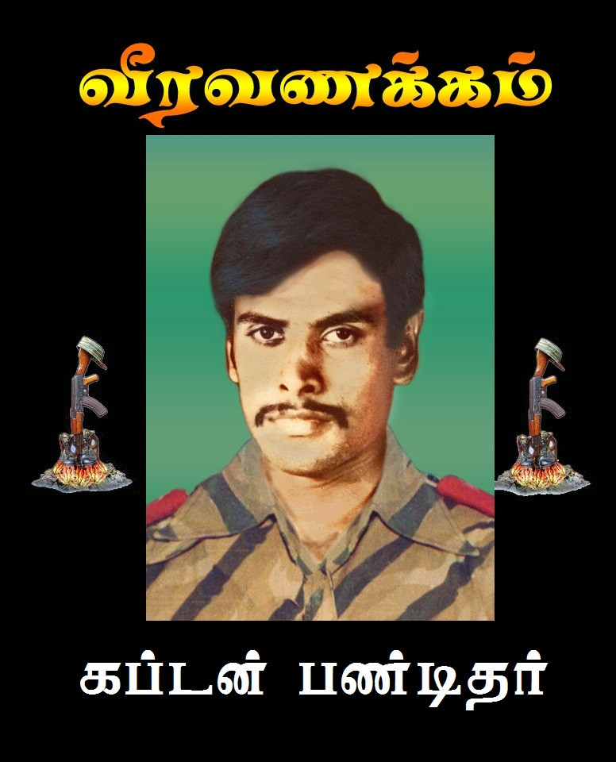

லெப். கேணல் பண்டிதர் வீர வரலாறு

உண்மைப் பெயர்: ஸ்ரீசங்கர் ரவி
இயக்கப் பெயர்: லெப். கேணல் பண்டிதர் / ரவி
வீரச்சாவு தேதி: 09.01.1985
வீரச்சாவடைந்த இடம்: அச்சுவேலி, யாழ்ப்பாணம்
பிறப்பிடம்: வல்வெட்டித்துறை
வரலாற்றுக்குறிப்பு
விடுதலைப் புலிகள் இயக்கத்தின் தொடக்கக்காலத் தூண்களில் ஒருவரான லெப். கேணல் பண்டிதர், இயக்கத்தின் ஆரம்பகால மத்திய குழு உறுப்பினராகவும், நிதி மற்றும் ஆயுத விநியோகப் பொறுப்பாளராகவும் மிகத் திறம்படச் செயலாற்றினார். 1985 ஜனவரி 9 அன்று யாழ் அச்சுவேலி பகுதியில் சிறிலங்கா இராணுவத்தினரின் திடீர் முற்றுகைச் சமரில் படுகாயமடைந்து வீரச்சாவடைந்தார்.